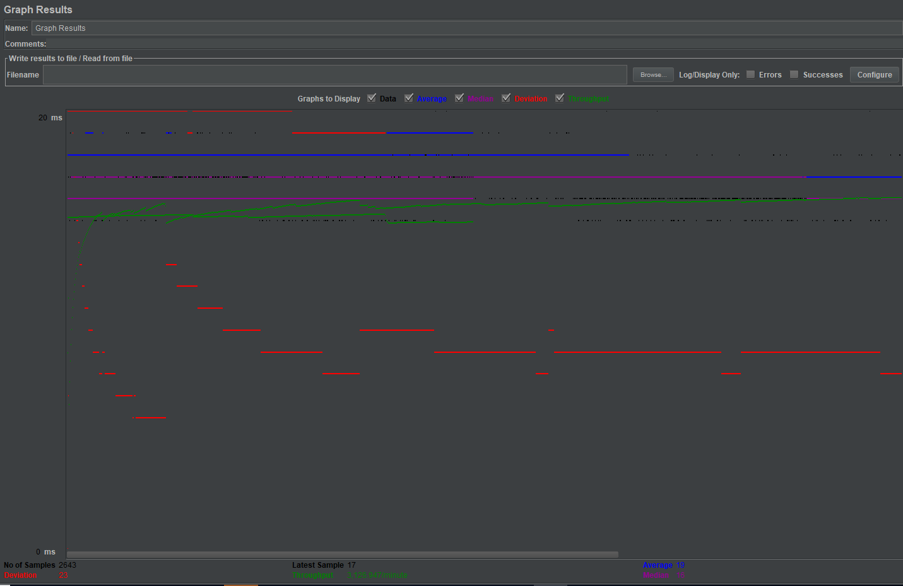
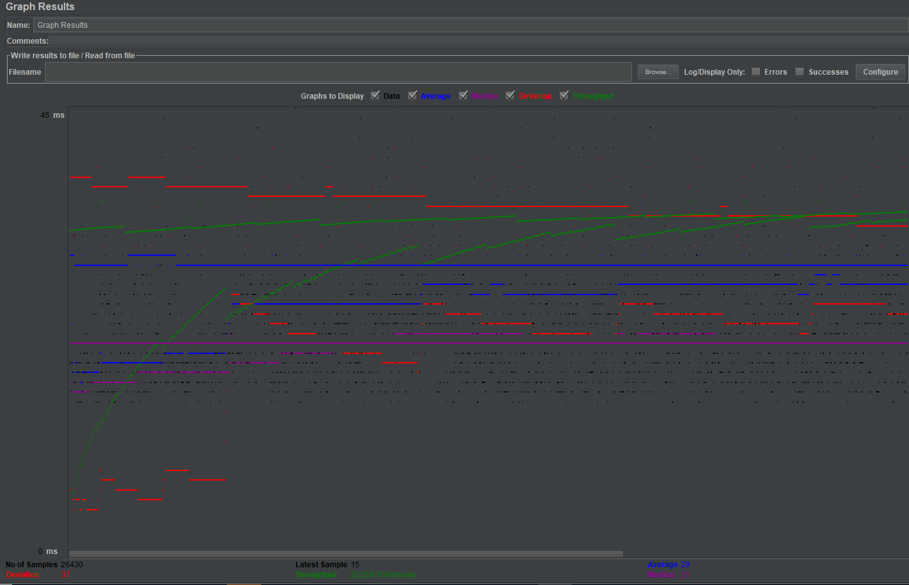
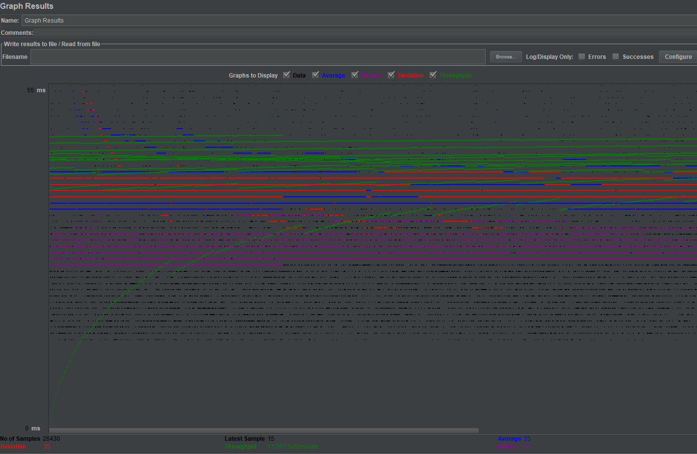
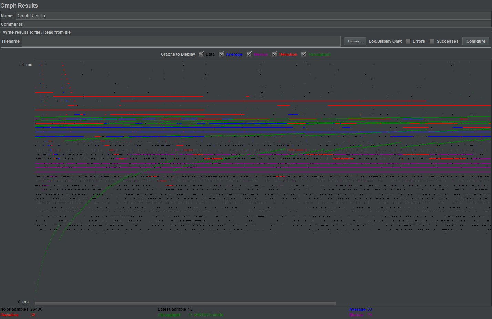
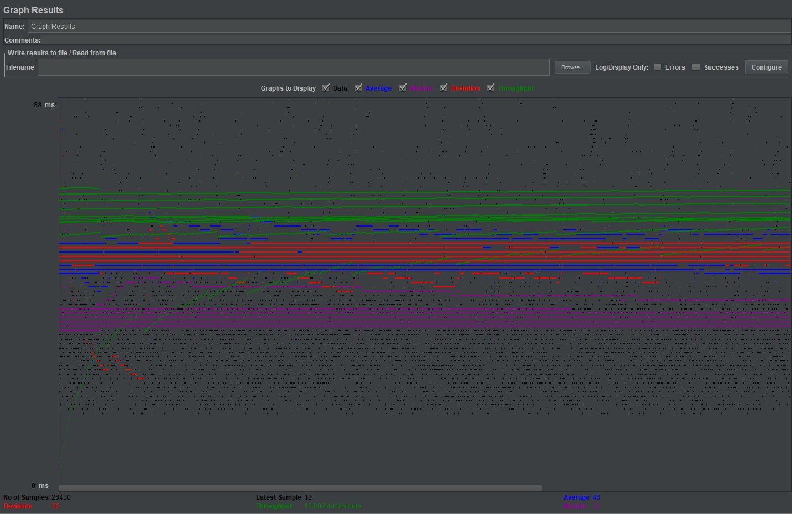
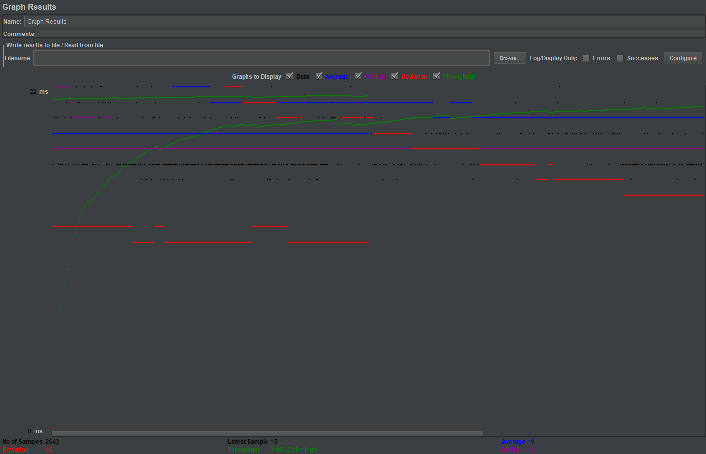
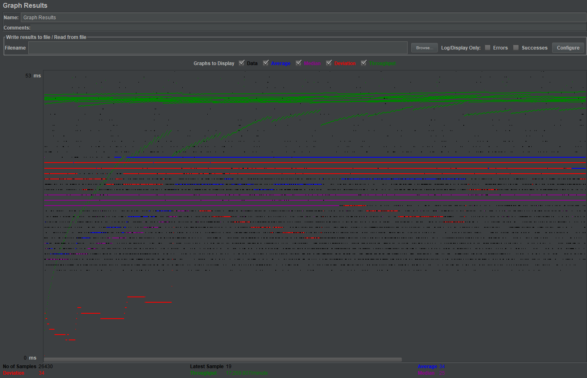
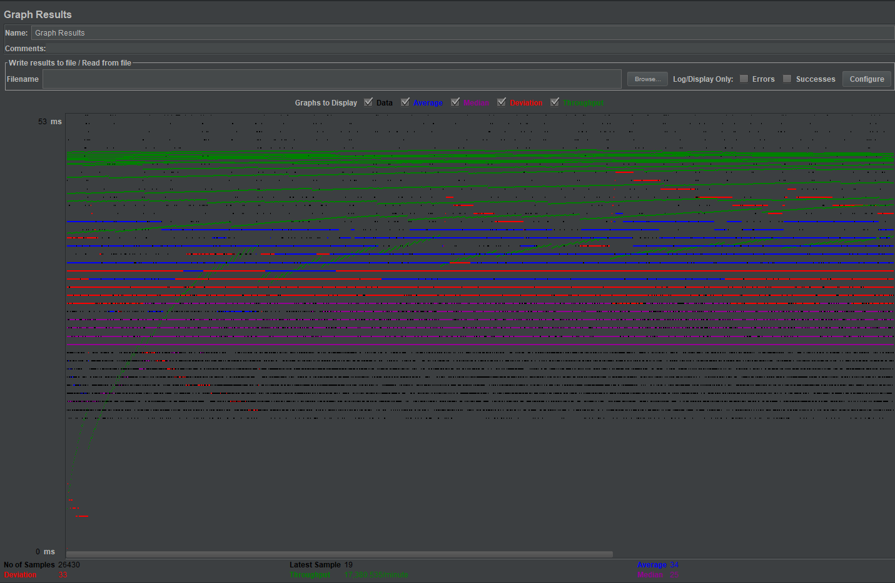
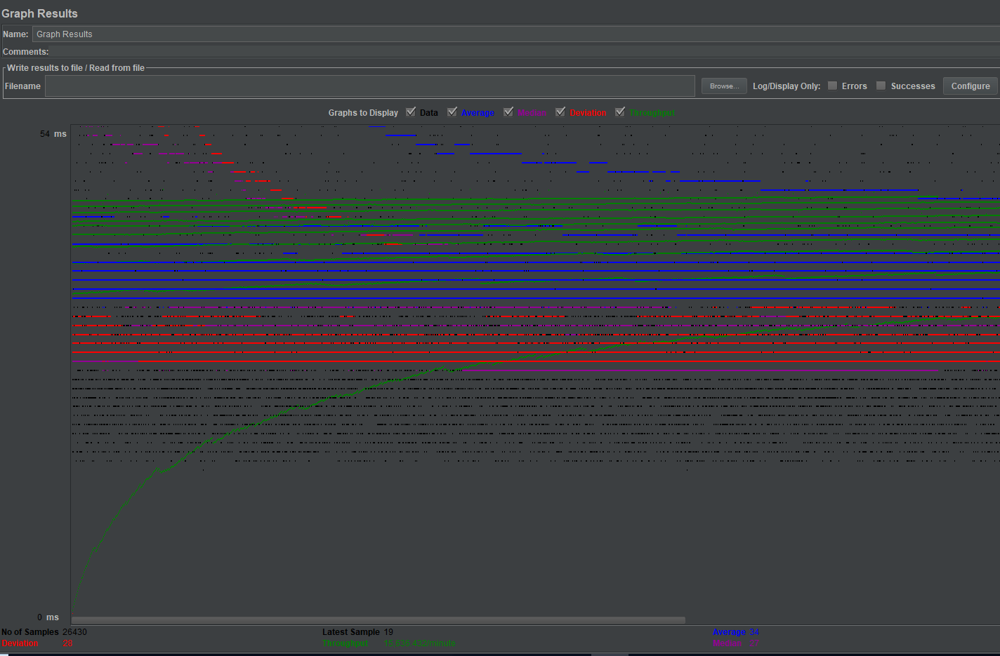

| Single-instance version cases | Graph Results Screenshot | Average Query Time(ms) | Average Search Servlet Time(ms) | Average JDBC Time(ms) | Analysis |
| Case 1: HTTP/1 thread |  | 19 | 2.5768 ms | 0.593 | One thread means we are only testing with one user. This one user sends a bunch of request which is handlled by instance 1 only. It seems fast since we are only testing with one user, connection pooling and prepared statements |
| Case 2: HTTP/10 threads |  | 29 | 10.817 | 4.188 | This test is similar to the test where we only used one thread, except all the scores are longer since we are testing with 10 users instead of 1. Thus, it requires more time to test with 10 users. |
| Case 3: HTTPS/10 threads |  | 33 | 14.985 | 6.009 | This test takes longer to run than its counterpart (HTTP/10 threads) because we are using HTTPS protocol. This means there is extra overheaad caused by encryption needed in HTTPS versus normal HTTP. |
| Case 4: HTTP/10 threads/No prepared statements |  | 33 | 14.276 | 5.137 | This test runs slower than the test with 10 threads with prepared statements and connection pooling because by using normal create statements, we have to make and recompile a new statement per request meanwhile prepared statements precompiles each statement and is mapped to the connection it was made with. |
| Case 5: HTTP/10 threads/No connection pooling |  | 46 | 25.737 | 16.802 | This test is significantly much slower without connection pooling because a new connection is being reinstantiated each and every time per request for each user. |
| Scaled version cases | Graph Results Screenshot | Average Query Time(ms) | Average Search Servlet Time(ms) | Average JDBC Time(ms) | Analysis |
| Case 1: HTTP/1 thread |  | 19 | 3.510 | .899 | This test does not vary from its counterpart (single instance HTTP/1 thread) because we only used one thread and sticky session maps all requests to the server it initually used (in this test, the master). Average TJ and TS are a little higher because of the overhead caused by the load balancer |
| Case 2: HTTP/10 threads |  | 34 | 13.782 | 5.986 | All requests were sent only to the slave which is why the results don't appear to be any more effective. But, if the requests were distributed across both the master and slave, we would see lower scores in the QT, TS and TJ. |
| Case 3: HTTP/10 threads/No prepared statements |  | 34 | 13.011 | 4.284 | The results from this test and HTTP/10 with prepared statements only vary slightly because all requests are sent to one server as well. If the workload was split between both backend instances, then this test should have run a little slower than its counterpart because it does not used prepared statements. Using normal statements means the statements are compiled each and every time per request. |
| Case 4: HTTP/10 threads/No connection pooling |  | 34 | 15.2215 | 9.9725 | Compared to its counterpart (HTTP/10/ No connection pooling), it is more efficient and faster because load balancing factor was used and the workload was distrubuted across the two backend MySQL servers. This isn't as fast as it would be with connection pooling because a new connection is recreated per request |